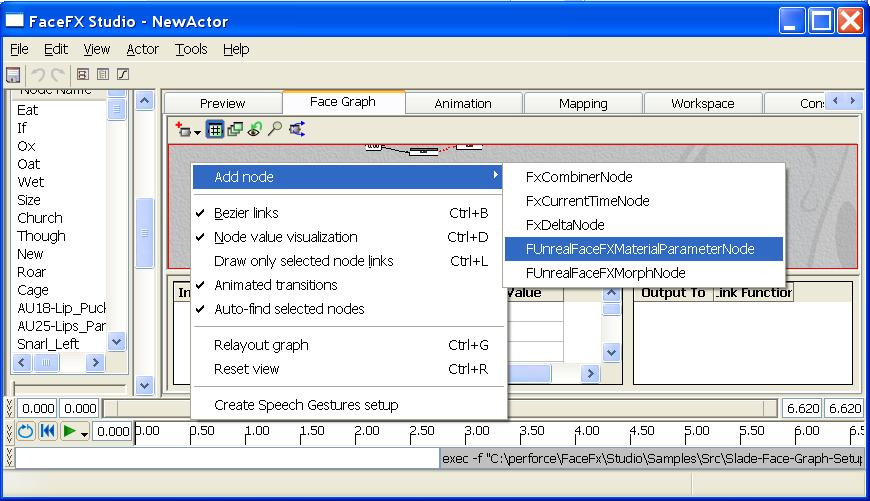
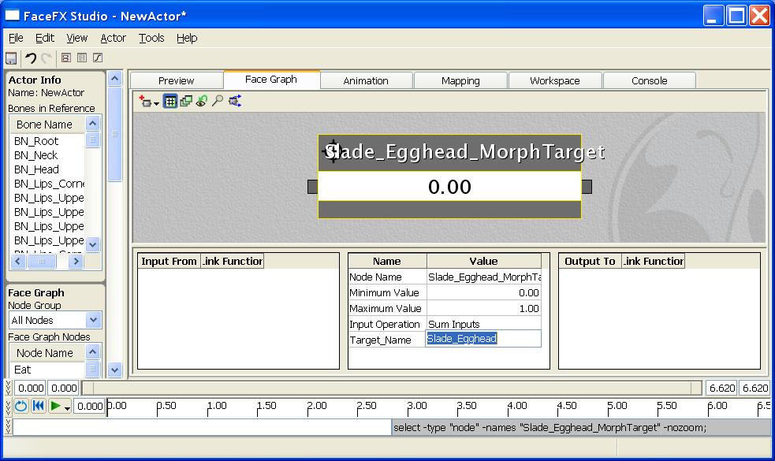
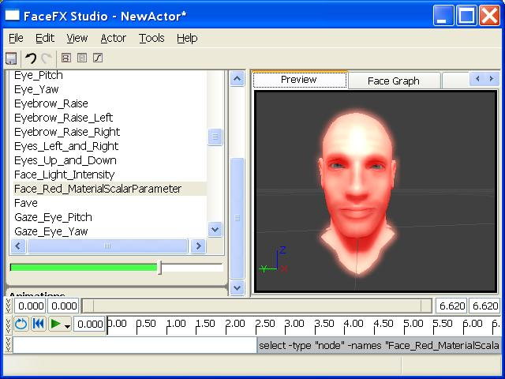
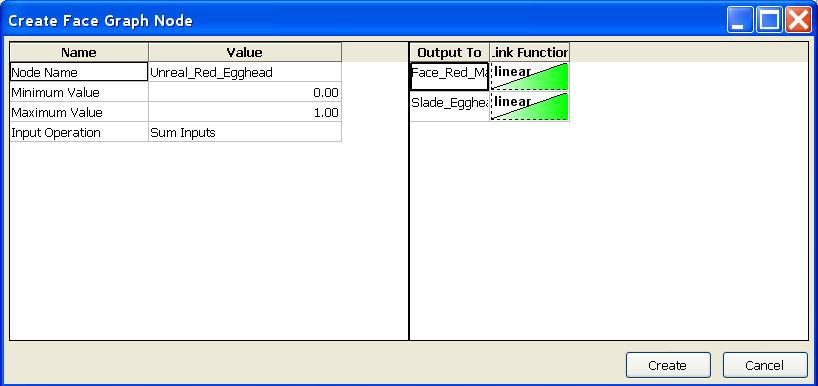

UDN
Search public documentation:
UnrealSpecificFaceFXNodesCH
English Translation
日本語訳
한국어
Interested in the Unreal Engine?
Visit the Unreal Technology site.
Looking for jobs and company info?
Check out the Epic games site.
Questions about support via UDN?
Contact the UDN Staff
日本語訳
한국어
Interested in the Unreal Engine?
Visit the Unreal Technology site.
Looking for jobs and company info?
Check out the Epic games site.
Questions about support via UDN?
Contact the UDN Staff
UE3 主页 > FaceFX面部动画 >Unreal特有的FaceFX节点
Unreal特有的FaceFX节点
概述
创建FUnrealFaceFXMaterialParameterNode

新创建的节点除了具有组合器节点的所有功能外，还有一些额外的属性： Material_Slot_Id（材质_插槽_标识）和Parameter_Name（参数_名称）。在Face Graph中选中节点后，可以通过编辑Face Graph节点属性进行修改。
修改Material_Slot_Id
Material_Slot_Id是与用于动画的材质插槽相关联。在这个示例中，要修改的Slade的主要贴图，它位于Material slot 1中。双击骨架网格，打开AnimSet Viewer（动画集查看器），进入右边的Mesh（网格物体）标签，可以查看骨架网格的材质插槽。选中新建的FUnrealFaceFXMaterialParameterNode，在Face Graph里将Material_Slot_Id属性值设为“1”，就可以将新建的Face G raph节点与Material slot 1相关联。点击回车键。
修改Parameter_Name
要使示例中人物的面部变成红色，首先创建一个名为Face_Red的Scalar （标量）参数，该参数将改变贴图的Emissive（自发光）通道。选中新建的FUnrealFaceFXMaterialParameterNode，在Face Graph里将Parameter_Name的属性值设为“Face_Red”，就可以用FaceFX驱动这个参数的值。点击回车键。
创建FUnrealFaceFXMorphNode
 要创建形态节点，可以在Face Graph中点击右键，选择Add Node -> FUnrealFaceFXMorphNode。将节点命名为Slade_Egghead_MorphTarget。顶点变形目标节点只有一个额外参数： Target_Name。
要创建形态节点，可以在Face Graph中点击右键，选择Add Node -> FUnrealFaceFXMorphNode。将节点命名为Slade_Egghead_MorphTarget。顶点变形目标节点只有一个额外参数： Target_Name。

修改Target_Name
对于顶点变形目标节点来说，只需要指出你想驱动的顶点变形目标的名称即可。在这个示例中，选中新建的FUnrealFaceFXMorphNode，在Face Graph里将Target_Name的属性值设为Slade_Egghead。
实现Unreal特有的节点动画
 然后，进入FaceFX中的Preview（预览）标签，打开左边Actor面板中的Face Graph区。确保Face Graph区顶部的Node Group（节点组）值为All Nodes（所有节点）。将垂直滚动条拖到列表的底部，可以看到新建的FaceFX节点。当然，也可以将列表中的节点排序，按名称找到它们。可以通过节点列表下方的快速预览滑块驱动目标。首先，驱动face_Red_MaterialScalerParameter。
然后，进入FaceFX中的Preview（预览）标签，打开左边Actor面板中的Face Graph区。确保Face Graph区顶部的Node Group（节点组）值为All Nodes（所有节点）。将垂直滚动条拖到列表的底部，可以看到新建的FaceFX节点。当然，也可以将列表中的节点排序，按名称找到它们。可以通过节点列表下方的快速预览滑块驱动目标。首先，驱动face_Red_MaterialScalerParameter。

然后，从Actor面板的Face Graph区中，选择Slade_Egghead_MorphTarget。提高它的节点值。这样，两个节点就都有了值。 最后，回到Workspace标签，点击“Create Combiner Node From Sliders”（从滑块创建组合器节点）按钮。在弹出的“Create Face Graph Node”（创建面部曲线图节点）对话框中。将新节点的名称改为“Unreal_Red_Egghead”，点击Create（创建）按钮。这样就在Face Graph中创建了新的组合器节点，它可以同时驱动两个FaceFX节点。也可以直接从Face Graph标签修改Face Graph。不过相比之下，前者的可视化程度更好。
最后，回到Workspace标签，点击“Create Combiner Node From Sliders”（从滑块创建组合器节点）按钮。在弹出的“Create Face Graph Node”（创建面部曲线图节点）对话框中。将新节点的名称改为“Unreal_Red_Egghead”，点击Create（创建）按钮。这样就在Face Graph中创建了新的组合器节点，它可以同时驱动两个FaceFX节点。也可以直接从Face Graph标签修改Face Graph。不过相比之下，前者的可视化程度更好。
